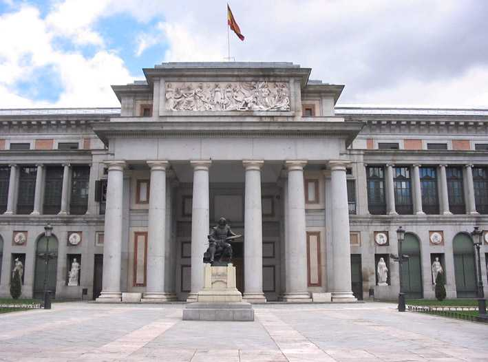

Localización del Museo del Prado
Localización:
MUSEO NACIONAL DEL PRADO
P. Del Prado s/n 28014 Madrid
Tel. +34 913 302 800
museonacional@prado.mcu.es

Transportes:
Metro: Banco de España, Atocha
Autobuses: 1, 5, 9, 10, 12, 14, 15
Trenes: Estaciones de Atocha y Recoletos
Volver a la página principal